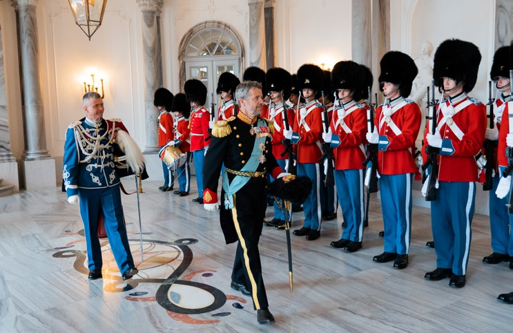
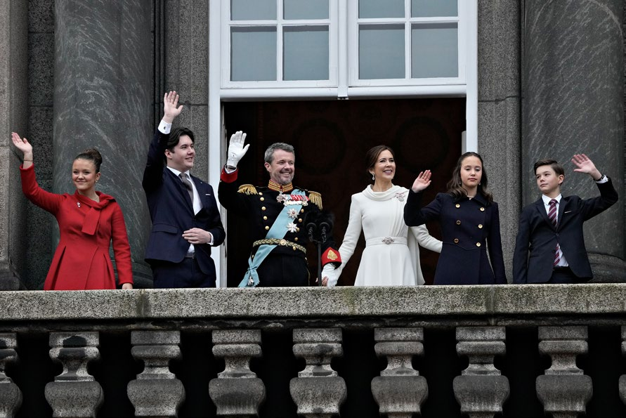

6.4 – KONGEHUSET
sidde 191
Det danske kongehus er blandt de ældste af verdens i alt 43 monarkier. Det er over tusind år gammelt og kan med sikkerhed føres tilbage til Gorm den Gamle i 900-tallet. Fra og med ham har Danmark i alt haft 54 monarker – 52 konger og to dronninger.
Fra 1448 til 1863 blev Danmark regeret af slægten Oldenborg og derefter af slægten Glücksborg, som har samme forfædre som oldenborgerne. Danmarks nuværende monark er Kong Frederik 10. (født 1968), som tilhører denne slægt. Han efterfulgte sin mor Dronning Margrethe 2., som valgte at abdicere den 14. januar 2024 – samme dato i 1972, hvor hun selv overtog tronen ved sin fars Frederik 9.'s død. Siden 1448 (hvor slægten Oldenborg overtog tronen) har 20 af 21 danske konger i øvrigt enten heddet Christian eller Frederik. Hans Majestæt Kong Frederik 10. af
Kong Frederik 10. af Danmark og Den Kongelige Livgarde. Foto: Kongehuset.
Danmark er et konstitutionelt monarki. Det betyder, at monarkiet fungerer inden for rammerne af grundloven og demokratiet. Monarken (kongen eller dron ningen) er ikke politisk valgt, men arver tronen. Kongen har ikke nogen reel politisk magt. Han blander sig ikke i det politiske liv, giver ikke udtryk for poli tiske holdninger og kan til gengæld ikke stilles til ansvar for regeringsførelsen. En række af kongens formelle opgaver er dog knyttet til det politiske liv. Han deltager blandt andet ved Folketingets åbning den første tirsdag i oktober og medvirker, når der skal udnævnes ministre eller dannes en ny regering.
Læremateriale Til Indfødsretsprøven

sidde 192
Kongen underskriver de af Folketinget og regeringen vedtagne love sammen med den politisk ansvarlige minister. Det sker på statsråd på Christiansborg, hvor kongen mødes med regeringens ministre.
Kongen er desuden vært, når Danmark modtager statsbesøg, ligesom han repræsenterer landet ved statsbesøg i udlandet. Kongen varetager herudover en lang række andre formelle og repræsentative opgaver i Danmark.
Kongen og kongehuset er et nationalt samlingspunkt. Kongehuset har en central placering i danskernes historie og er meget populært i befolkningen. Mange følger for eksempel med via tv, når monarken nytårsaften holder sin traditions rige tale fra kongefamiliens hjem på Amalienborg i København eller fra resi densen på Fredensborg Slot. Og mange møder op på Amalienborgs Slotsplads og hylder kongen på hans fødselsdag, som er den 26. maj.
Kongen har siden 2004 været gift med dronning Mary (født 1972), som oprinde ligt kommer fra Australien. Sammen har de fire børn (kronprins Christian (født 2005), prinsesse Isabella (født 2007) samt tvillingerne prins Vincent og prinsesse Josephine (født 2011)). Den ældste, kronprins Christian, overtager en dag tronen som Christian 11.Kong Frederik 10. sammen med Dronning Mary, og deres fire børn (fra venstre) prinsesse Isabella, kronprins Christian, prinsesse Josephine og
Kong Frederik 10. sammen med Dronning Mary, og deres fire børn (fra venstre) prinsesse Isabella, kronprins Christian, prinsesse Josephine og prins Vincent. Foto: Kongehuset.
Læremateriale Til Indfødsretsprøven

Fonte: Læremateriale til Indfødsretsprøven, SIRI.